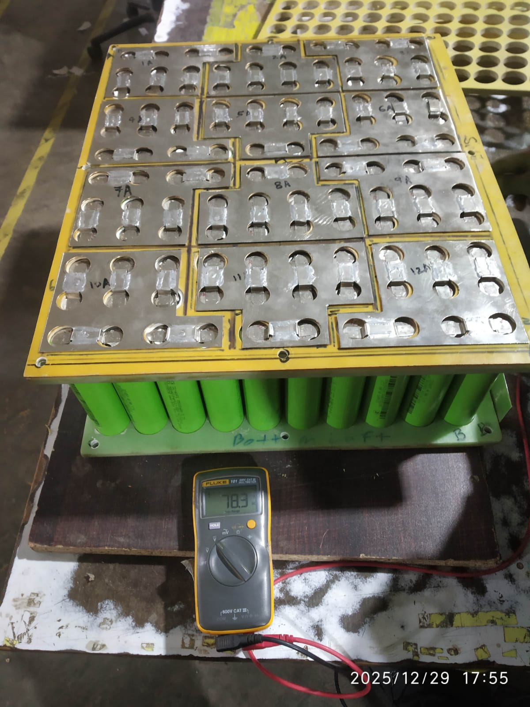
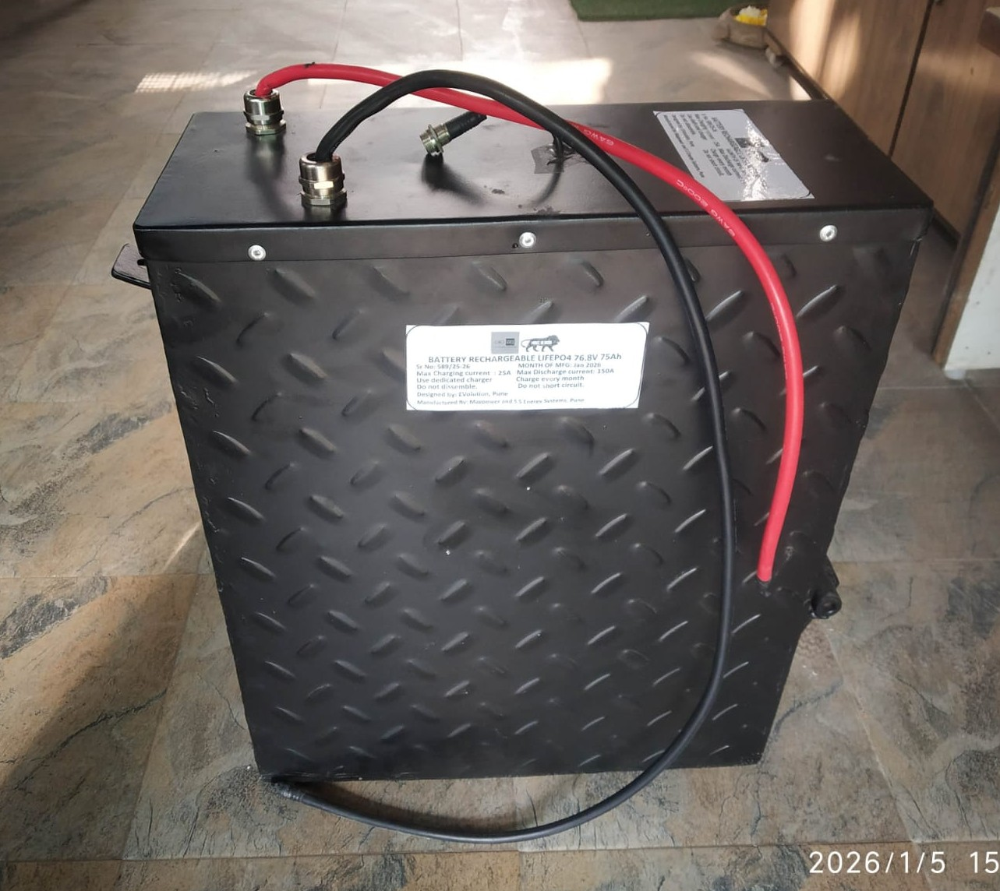
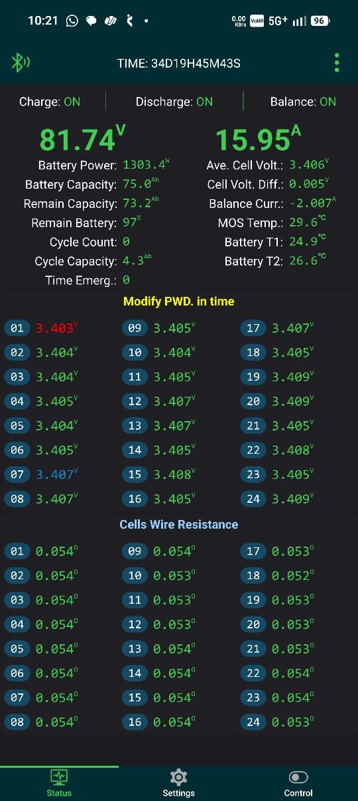
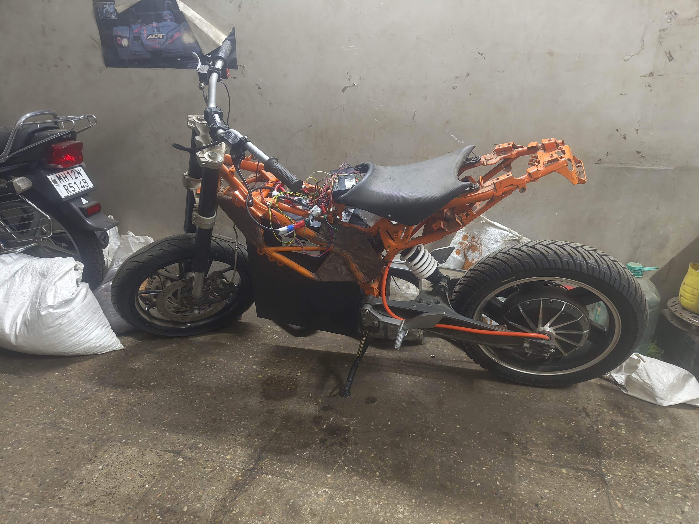

The First Hardware Build
I started here: a bare frame, a pile of cylindrical cells, heavy-gauge cable, and the goal to safely push a 3kW hub motor. The objective was not to build a beautiful, polished bike. It was to learn high-current routing, pack assembly, and what it physically feels like when 76 volts is live.

System Architecture
Every component was chosen for overhead, not just adequacy. Operating well within thermal and electrical limits is the only margin of safety you have when building a custom system.
-
Energy Storage — 24S5P configuration using 33140 cylindrical LiFePO4 cells (15Ah each). LiFePO4 was chosen for its superior thermal stability—critical for a pack without active cooling.
-
Battery Management — A JK BMS handles active cell balancing, over-current protection, and thermal cutoffs.
-
Powertrain — A 3kW brushless DC hub motor laced directly into the rear wheel.
-
Motor Controller — A VESC rated for 100V/200A continuous, ensuring the 76V system bus never approaches the controller's absolute limit.
Building the 24S5P Pack
Assembling the pack was the most critical phase. The 33140 format cells are large and heavy. Arranging 120 of them (24 series × 5 parallel) to fit the enclosure while maintaining consistent compression and allowing heat to escape required careful planning.
The interconnects carry real current. Every connection was made with properly sized copper busbar stock and verified for resistance. To maintain a robust mechanical build, the cells were secured and connected using bolted compression terminals rather than spot welds.


Active Balancing & Telemetry
A 24-series LiFePO4 pack requires active intervention to prevent voltage drift across cells. The JK BMS shuttles charge from high-voltage groups to low-voltage groups during the balance window, rather than just burning off excess energy as heat. The telemetry proves this: the cell voltage delta across all 24 series groups stays consistently tight under load.

Sub-System Testing
Nothing went on the frame until it had been tested off the frame. The motor controller was load-tested and throttle mapping was verified before the custom pack was introduced.
VESC & Motor — AC/DC Supply Verification
Initial VESC configuration and first motor spin using a current-limited bench power supply to confirm initialization without hardware faults.
Raw Throttle Response — 72V Loaner Pack
Testing throttle curve linearity and VESC current ramp behavior on a 72V loaner pack while the custom battery assembly was being completed.
The Raw Prototype
No fairings, no paint, no aesthetics. The objective was a fully functional drivetrain with all electrical systems integrated and verified. This is what pure functional engineering looks like.


What This Build Taught Me
The most important thing I learned from this project wasn't about LiFePO4 chemistry. It was about the reality of debugging live hardware.
Every time I needed to verify a firmware behavior or a BMS cutoff threshold, I was doing it with real voltage and real consequences. Changing a parameter meant powering down, flashing, and testing again in a cycle that is intentionally slow because rushing on a live 76V system is dangerous.
Why EVO vHIL Exists
My next project is a ground-up 300V EV architecture with custom schematics and firmware. At 300V, the energy stored in a pack isn't just enough to damage hardware—it can kill.
Knowing the risks from this 76V build, I realized I needed a way to validate state transitions and fault responses without any of my code touching live voltage until it had been proven in simulation.
That is exactly why I built EVO vHIL. It allows me to run production-intent firmware against a simulated powertrain before it ever sees a real one. This 76V bike is the reason that simulator exists.